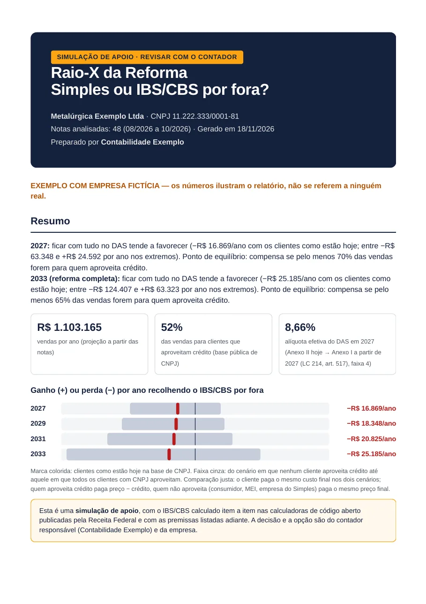
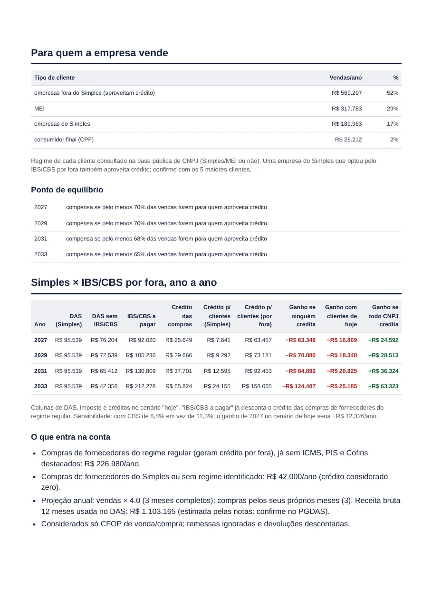
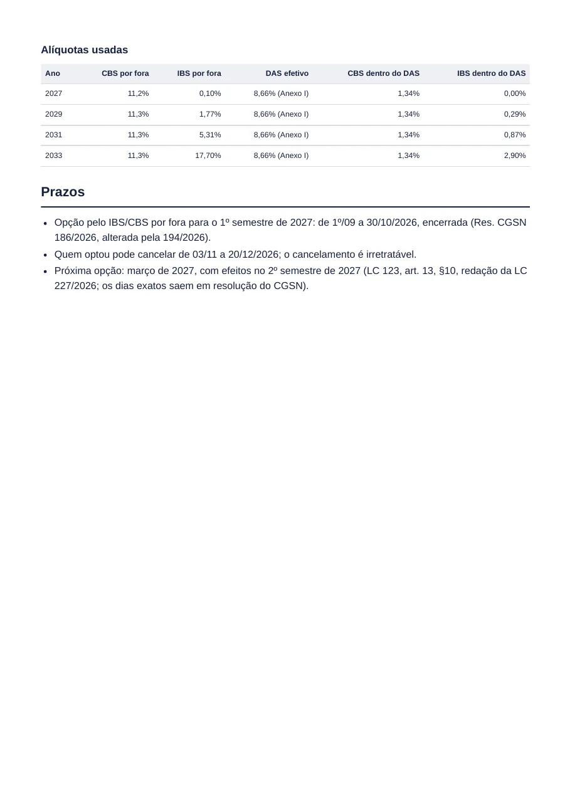
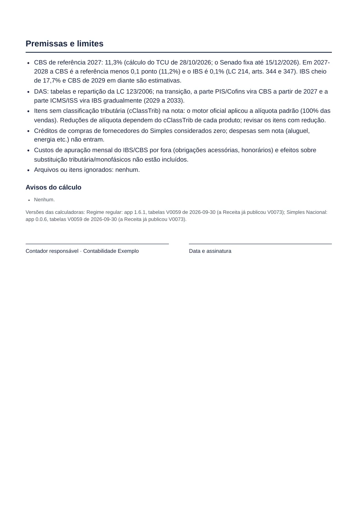

Raio-X da Reforma
Simples ou IBS/CBS por fora? A resposta de cada cliente seu, num PDF com o nome do seu escritório.
O prazo que importa agora
Res. CGSN 194/2026. Depois disso, a próxima janela de opção é março de 2027, com efeitos no 2º semestre (LC 123, art. 13, §10; os dias exatos saem em resolução do CGSN).
LC 123, art. 13, §10. Os dias exatos saem em resolução do CGSN.
Optou pelo IBS/CBS por fora pra algum cliente até 30/10? Dá pra cancelar até 20/12/2026, e o cancelamento é irretratável.
A próxima janela de opção é março de 2027, com efeitos no 2º semestre. Dá tempo de chegar com a conta de cada cliente pronta.
O exemplo, cenário por cenário
A Metalúrgica Exemplo Ltda é fictícia e os números são os do PDF de exemplo. Escolha o ano e quem aproveita crédito.
−R$ 16.869
por ano recolhendo o IBS/CBS por fora, em 2027, com os compradores como estão hoje. Neste exemplo, ficar com tudo no DAS tende a favorecer.
Ganho ou perda por ano recolhendo por fora: do cenário em que ninguém aproveita crédito ao cenário em que todo comprador com CNPJ aproveita
- 2027−R$ 16.869
- 2029−R$ 18.348
- 2031−R$ 20.825
- 2033−R$ 25.185
Ponto de equilíbrio em 2027: só compensa se pelo menos 70% das vendas forem pra quem aproveita crédito. Hoje são 52%.
Aqui ficar no Simples ganhou. Em quem vende mais pra empresas fora do Simples, pode dar o contrário. Por isso a conta é cliente a cliente. Abrir o PDF de exemplo, 4 páginas
Três coisas mudam a resposta
Pra quem ele vende
Comprador que é empresa fora do Simples aproveita pouco crédito se o seu cliente recolhe no DAS, e o crédito cheio se ele recolhe por fora. Isso mexe em preço e em contrato.
Se vende pra consumidor final
Crédito não importa pro consumidor. Recolher por fora pode só aumentar a conta.
De quem ele compra
Fornecedor do regime regular gera crédito por fora; fornecedor do Simples, quase nada. Só os XMLs mostram o peso de cada um.
O que vem no relatório
Resumo na página 1
Qual caminho tende a favorecer o seu cliente, em 2027 e com a reforma completa.
Ponto de equilíbrio
A partir de que fatia das vendas pra quem aproveita crédito o IBS/CBS por fora compensa.
Três cenários por ano
Ninguém credita, compradores de hoje e todo CNPJ credita, em 2027, 2029, 2031 e 2033.
Pra quem ele vende
Quanto vai pra empresa fora do Simples, empresa do Simples, MEI e consumidor final, pela base pública de CNPJ.
Premissas e limites escritos
Alíquotas, prazos e o que não entra na conta. Nada escondido, pra você conferir antes de assinar.
Campo pra sua assinatura
O PDF sai com o nome do seu escritório. Quem revisa, assina e apresenta é você.
Como funciona
-
Primeiro, os XMLs no WhatsApp
Vendas e compras de 3 a 12 meses do cliente, num .zip. Diga o nome da empresa, o anexo do Simples e como quer o nome do escritório no PDF.
xmls-ago-out.zip48 notas · 212 KB
Metalúrgica Exemplo Ltda, Anexo II. No PDF pode sair Contabilidade Exemplo.
Recebido. Hoje ainda você recebe o relatório aqui.
-
Depois, a conta item a item
IBS e CBS nas calculadoras de código aberto publicadas pela Receita Federal (regime regular e Simples Nacional) e o regime de cada comprador pela base pública de CNPJ.
Nota Do outro lado Crédito Venda Empresa fora do Simples aproveita Venda MEI não aproveita Venda Empresa do Simples não aproveita Venda Consumidor final (CPF) não aproveita Compra Fornecedor do regime regular gera crédito Compra Fornecedor do Simples zero -
Então, o PDF com seu nome
A meta é entregar no mesmo dia útil em que os XMLs chegam. Se for demorar mais, a gente avisa. Os XMLs são apagados logo depois da entrega.
-
Por fim, você revisa e assina
É uma simulação de apoio. Quem decide e faz a opção é o contador responsável, e a gente nunca fala com o seu cliente.

Prefere não mandar nota nenhuma? Na prévia local os XMLs são lidos no seu navegador e você já vê pra quem o seu cliente vende.
Preço
O relatório
- Primeiro relatório
- grátis
- Do segundo em diante
- R$ 49
- Mensalidade
- não tem
Com um cliente real seu. Sem cartão, tudo pelo WhatsApp.
Por relatório. Pix ou cartão, por link do Mercado Pago que a gente manda no WhatsApp.
Você paga só o relatório que pedir.
Se algo der errado
- Erro nosso
- refazemos
- Caso não coberto
- avisamos
Arquivo lido errado ou conta trocada: sem custo.
Receita acima do sublimite de R$ 3,6 milhões ou empresa sem notas de venda: a gente diz antes, em vez de entregar número ruim.
Pedido e XMLs pelo WhatsApp (35) 98417-5608. Quero meu relatório grátis
Perguntas
O relatório decide pelo meu cliente?
Não. É uma simulação de apoio. Quem decide e faz a opção é o contador responsável; o PDF traz espaço pra sua assinatura.
De onde vêm os números?
O IBS e a CBS de cada item saem das calculadoras de código aberto publicadas pela Receita Federal. O DAS sai das tabelas da LC 123/2006. A CBS de 2027 usa os 11,3% calculados pelo TCU (o Senado fixa a alíquota até 15/12/2026); o IBS cheio a partir de 2029 ainda é estimativa. Tudo isso vem escrito no relatório.
A opção já fechou. Serve pra quê?
Pra duas coisas. Se você optou pelo IBS/CBS por fora pra algum cliente, dá pra cancelar até 20/12/2026, e o cancelamento é irretratável: o relatório mostra se a opção se sustenta com os compradores que ele tem hoje. E a A próxima janela de opção é em março de 2027: dá pra chegar com a conta de cada cliente pronta.
Já existe simulador grátis. Por que pagar?
Os simuladores grátis da Receita e do Sebrae pedem que você digite quanto das vendas vai pra quem aproveita crédito. É justamente o número que decide. A gente tira isso dos XMLs e da base pública de CNPJ, comprador por comprador, e entrega o PDF com o nome do seu escritório.
Vocês vão falar com o meu cliente?
Nunca. A gente só atende escritório de contabilidade. Se o dono de uma empresa nos procurar, pedimos que fale com o contador dele. O PDF sai com o nome do seu escritório e quem apresenta é você.
O que acontece com os XMLs?
Usamos só pra gerar o relatório e apagamos logo depois da entrega. Não vendemos nem compartilhamos nada. Os detalhes estão em termos e privacidade.
Quais clientes valem a pena?
Principalmente os do Simples que vendem pra outras empresas (CNPJ). Pra quem vende só pra consumidor final, a conta tende a mostrar que o DAS basta.
Quanto tempo leva?
A meta é entregar no mesmo dia útil em que os XMLs chegam. Se for demorar mais, a gente avisa no WhatsApp.
Simples oupor fora?
O primeiro relatório é por nossa conta, com um cliente real seu.